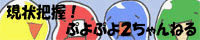

このページはmattulwan氏のサイトに掲載されていたぷよぷよツールです。
mattulwan氏のホームページ機能停止に伴い復元させていただきました。
JavaScriptで作ったとことんぷよぷよです。
JavaScriptとスタイルシートを有効にして下さい。
JavaScriptで作ったとことんぷよぷよです。
JavaScriptとスタイルシートを有効にして下さい。
- 特徴
- 自由落下しないので、十分に考えて組む事ができます。
- 同じ配色で、何度も組み直すことができます。
- 好きな時に、好きな量のお邪魔ぷよを降らせる事ができます。
- 使い方
- ボタンを押すか、キーボードで操作します。
- キー設定は、テキストフィールドをクリックして、使いたいキーを押せば変更できます。
- 出てくる色を変えた場合、配色を変えてリトライしたら反映されます。
- エディターで作ったURLを入力してリトライすると、初期配置を指定できます。（短縮URLは非対応）
[更新履歴]

2019/05/21 3手目までに4色目が出現しないように調整
2019/04/01 geocities消滅に伴いmattulwan氏のサイトからpndsngがサルベージしました
2010/09/01 キー設定を保存できるようにした
2009/10/21 ぷよを置いた後の硬直時間を消した
2009/10/20 配色を128手でループするようにした
2009/06/20 出てくる色を選べるようにした
初期配置を指定できるようにした
2009/06/08 キー設定を増やした
2009/06/05 お邪魔ぷよを降らせられるようにした
2009/05/31 使う色をランダムに変えるようにした
2009/05/24 今のぷよ配置でエディターを開けるようにした
2009/05/21 戻ると進むを実装した
2009/05/19 スコアと予告ぷよを表示するようにした
2009/05/18 公開
2019/04/01 geocities消滅に伴いmattulwan氏のサイトからpndsngがサルベージしました
2010/09/01 キー設定を保存できるようにした
2009/10/21 ぷよを置いた後の硬直時間を消した
2009/10/20 配色を128手でループするようにした
2009/06/20 出てくる色を選べるようにした
初期配置を指定できるようにした
2009/06/08 キー設定を増やした
2009/06/05 お邪魔ぷよを降らせられるようにした
2009/05/31 使う色をランダムに変えるようにした
2009/05/24 今のぷよ配置でエディターを開けるようにした
2009/05/21 戻ると進むを実装した
2009/05/19 スコアと予告ぷよを表示するようにした
2009/05/18 公開